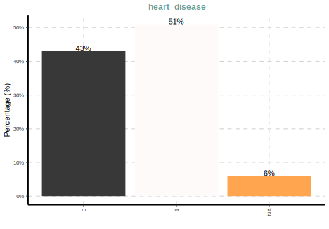

Table of Contents
Introduction
In R there are many tools available to help you dive in and explore your data. However, in consulting I still see a lot of people using base R’s table and summary functions, followed by a lot of work to get the result into a more presentable format. My own frustrations led to me creating a package (tidyext) for personal use in this area. While that suits me fine, there are tools that can go much further with little effort. Recently, Staniak & Biecek Staniak and Biecek (2019) wrote an article in the R Journal exploring several of such packages, so I thought I’d try them out for myself, and take others along with me for that ride.
Note that these are first impressions, and I haven’t really dived deeply into any of the packages, and may be missing some key features (apologies to the package authors!). But that is also part of the point for this sort of thing. These aren’t modeling packages, and we have a good idea of what we want in EDA, so these should be easy to pick up and use.
Packages
I’ve updated the article’s table 1, which adds roughly a year’s worth of downloads.
| package | downloads | debut |
|---|---|---|
| janitor | 495548 | 2016-10-03 |
| summarytools | 199235 | 2014-08-11 |
| DataExplorer | 186456 | 2016-03-01 |
| visdat | 184922 | 2017-07-11 |
| funModeling | 102122 | 2016-02-07 |
| arsenal | 76190 | 2016-12-30 |
| dlookr | 44482 | 2018-04-27 |
| dataMaid | 42799 | 2017-01-02 |
| inspectdf | 23351 | 2019-04-24 |
| xray | 19409 | 2017-11-22 |
| RtutoR | 16272 | 2016-03-12 |
| ExPanDaR | 15464 | 2018-05-11 |
| exploreR | 14459 | 2016-02-10 |
| SmartEDA | 13674 | 2018-04-06 |
| explore | 10125 | 2019-05-16 |
A more informative assessment of usage would be in average monthly downloads.
| package | average_monthly_downloads |
|---|---|
| janitor | 10772.783 |
| visdat | 4997.892 |
| DataExplorer | 3518.038 |
| summarytools | 2767.153 |
| funModeling | 1891.148 |
| arsenal | 1731.591 |
| dlookr | 1588.643 |
| inspectdf | 1459.438 |
| dataMaid | 995.326 |
| explore | 675.000 |
| xray | 588.152 |
| ExPanDaR | 572.741 |
| SmartEDA | 488.357 |
| RtutoR | 307.019 |
| exploreR | 267.759 |
Here is a visualization of their growth over time.

Selected packages
Arbitrary criteria
I’ll outline my reasons for selecting some packages to explore and not others. These reasons are somewhat, but not necessarily, arbitrary, and may leave out some viable newer packages. For the data scenario, I am assuming messy data of the sort that might have hundreds of columns of mixed data types, potentially with lots of missingness, attributes that are only applicable to subsets of the data (e.g. branching logic in surveys), etc.1
Here is my criteria for selection:
- Relatively more widely used
- I’ve used it before and want to revisit it
- I’ve heard of it before and want to try it
- I’m familiar with the package author’s work elsewhere
- The pacakge appears to be in active development (especially on GitHub) according to modern programming standards
- Good documentation
Things I’m not as concerned about:
- Anything that requires actual analysis. I have no interest in bivariate statistical tests, PCA, imputation. It likely isn’t appropriate, and I could do better via other means.
- Visuals, though fundamental for data exploration, can usually be done better with even a modicum of effort, so this wouldn’t be a big factor for me, and some common ones are poor for communication (e.g. histograms). However, if it saves me some time for initial presentations or something like that, all the better.
In the end, I would like a package that is well put together and will make common tasks easier for me and potentially save me time in creating reports/presentation.
Conceptual organization
Staniak & Biecek note two general phases of data exploration, each with specific tasks, based on the CRISP-DM standard Wirth and Hipp (2000).2
- Understanding
- Description
- Validity
- Exploration
- Preparation
- Cleaning
- Derived Attributes
In the first place, I will focus on tools for understanding, particularly description and validity, as they refer to exploration tasks solely as visualization, which is a perk, but something I’m more inclined to do myself.
I’m definitely less interested in the preparation though I will speak about it more towards the end. ‘Cleaning’ in the article refers to mean/median imputation, something I’ve never bothered to do for reasons that have been noted in the statistical literature for a very long time. The other transformations are easy, and probably should be more explicitly documented in your code. Furthermore, in creating derived attributes, things like category merging and standardization depend on the subset of the data used, so it would probably be better to be more explicit than automatic. Also, if things like an automated PCA is viable for your situation, it probably is very simple data (i.e. all variables of the same type), in which case, most of these tools probably won’t add much value to you anyway.
So with that in mind here are the ones I will explore (in alphabetical order):
- arsenal
- DataExplorer
- dataMaid
- janitor (not explored in the previous article)
- SmartEDA
- summarytools
- visdat
The Data
I’ve chosen the heart disease data originally available from the UCI repository (object name hd). It contains a mixture of data types but isn’t too unweildy, as it’s already been cleaned and has few columns (it’s from my noiris package). For our purposes, I’ve additionally added some random missingness, and created an hd_sample which has only a couple columns to cut down on the display.
Data Description
For data description, we are interested in things like, dimensions of the data, variable types, and maybe even meta meta-data like the object’s size in RAM. I also add univariate data summaries as it’s something you’d always want to know and usually report, though these are thought of as ‘data exploration’ in the article’s delineation.
Preliminary
To give a sense of what my preferences are, consider my own functions. The following actually calls a separate numerical summary function as well as a categorical variable function, and both return ‘tidy’ data frames that can immediately be used for presentation (e.g. via kableExtra) and visualization (e.g. ggplot2), or drilling down to only selections of the output.
library(tidyext)
describe_all(hd, extra = T) # also describe_all_num, describe_all_cat
$`Numeric Variables`
# A tibble: 8 x 12
Variable N Mean SD Min Q1 Median Q3 Max `% Missing` Distinct Zeros
<chr> <dbl> <dbl> <dbl> <dbl> <dbl> <dbl> <dbl> <dbl> <dbl> <dbl> <dbl>
1 age 286 54.5 9.14 29 48 55.5 61 77 6 41 0
2 resting_bp 285 131. 17.8 94 120 130 140 200 6 49 0
3 cholesterol 290 246. 51.6 126 211 240 274 564 4 149 0
4 resting_ecg 297 0.52 0.53 0 0 1 1 2 2 3 146
5 max_heartrate 287 149. 22.8 71 133 152 166. 202 5 90 0
6 old_peak 286 1.06 1.18 0 0 0.8 1.6 6.2 6 40 94
7 n_vessels 288 0.74 1.03 0 0 0 1 4 5 5 164
8 heart_disease 291 0.54 0.5 0 0 1 1 1 4 2 133
$`Categorical Variables`
# A tibble: 22 x 4
Variable Group Frequency `%`
<chr> <fct> <int> <dbl>
1 sex male 197 65
2 sex female 92 30
3 sex <NA> 14 5
4 chest_pain_type typical angina 135 45
5 chest_pain_type non-anginal pain 80 26
6 chest_pain_type atypical angina 48 16
7 chest_pain_type asymptomatic 22 7.
8 chest_pain_type <NA> 18 6
9 fasting_blood_sugar lt_120 244 81
10 fasting_blood_sugar gt_120 43 14.
# … with 12 more rowsI also have options, such as the following.
hd %>%
select(age, sex, heart_disease) %>%
describe_all(
digits = 2,
include_NAcat = FALSE, # don't include NA as a category
include_numeric = TRUE, # allows numeric variables with few levels given in max_levels argument as categorical
max_levels = 3,
sort_by_freq = TRUE,
extra = TRUE
)
$`Numeric Variables`
# A tibble: 2 x 12
Variable N Mean SD Min Q1 Median Q3 Max `% Missing` Distinct Zeros
<chr> <dbl> <dbl> <dbl> <dbl> <dbl> <dbl> <dbl> <dbl> <dbl> <dbl> <dbl>
1 age 286 54.5 9.14 29 48 55.5 61 77 6 41 0
2 heart_disease 291 0.54 0.5 0 0 1 1 1 4 2 133
$`Categorical Variables`
# A tibble: 4 x 4
Variable Group Frequency `%`
<chr> <fct> <int> <dbl>
1 sex male 197 68
2 sex female 92 32
3 heart_disease 1 158 54
4 heart_disease 0 133 46For grouped output, I can use the underlying functions. Here we look at summaries for a couple numerical variables by sex.
hd %>%
num_by(
main_var = vars(age, cholesterol),
group_var = sex,
extra = TRUE
)
# A tibble: 6 x 13
# Groups: sex [3]
sex Variable N Mean SD Min Q1 Median Q3 Max `% Missing` Distinct Zeros
<chr> <chr> <dbl> <dbl> <dbl> <dbl> <dbl> <dbl> <dbl> <dbl> <dbl> <dbl> <dbl>
1 male age 188 53.7 8.9 29 47 54 60 77 5 37 0
2 male cholesterol 191 240. 42.1 131 208 235 266. 353 3 114 0
3 female age 84 56 9.4 34 50 57 63 76 9 33 0
4 female cholesterol 86 260. 66.6 141 213. 250. 295. 564 7 71 0
5 <NA> age 14 56 10 34 56 58 59.8 70 0 10 0
6 <NA> cholesterol 13 244. 51.8 126 224 249 282 326 7 12 0The categorical variable functionality is very similar.
hd %>%
cat_by(
main_var = chest_pain_type,
group_var = sex
)
# A tibble: 14 x 5
# Groups: sex [3]
sex chest_pain_type N `% of Total` `% of sex`
<chr> <chr> <int> <dbl> <dbl>
1 female asymptomatic 4 1.32 4.35
2 female atypical angina 17 5.61 18.5
3 female non-anginal pain 31 10.2 33.7
4 female typical angina 35 11.6 38.0
5 female <NA> 5 1.65 5.43
6 male asymptomatic 17 5.61 8.63
7 male atypical angina 31 10.2 15.7
8 male non-anginal pain 44 14.5 22.3
9 male typical angina 93 30.7 47.2
10 male <NA> 12 3.96 6.09
11 <NA> asymptomatic 1 0.330 7.14
12 <NA> non-anginal pain 5 1.65 35.7
13 <NA> typical angina 7 2.31 50
14 <NA> <NA> 1 0.330 7.14As these are tidy tibbles, they are essentially ready for presentation.
describe_all_num(hd) %>%
kableExtra::kable()| Variable | N | Mean | SD | Min | Q1 | Median | Q3 | Max | % Missing |
|---|---|---|---|---|---|---|---|---|---|
| age | 286 | 54.48 | 9.14 | 29 | 48 | 55.5 | 61.0 | 77.0 | 6 |
| resting_bp | 285 | 131.47 | 17.83 | 94 | 120 | 130.0 | 140.0 | 200.0 | 6 |
| cholesterol | 290 | 245.60 | 51.63 | 126 | 211 | 240.0 | 274.0 | 564.0 | 4 |
| resting_ecg | 297 | 0.52 | 0.53 | 0 | 0 | 1.0 | 1.0 | 2.0 | 2 |
| max_heartrate | 287 | 149.46 | 22.81 | 71 | 133 | 152.0 | 165.5 | 202.0 | 5 |
| old_peak | 286 | 1.06 | 1.18 | 0 | 0 | 0.8 | 1.6 | 6.2 | 6 |
| n_vessels | 288 | 0.74 | 1.03 | 0 | 0 | 0.0 | 1.0 | 4.0 | 5 |
| heart_disease | 291 | 0.54 | 0.50 | 0 | 0 | 1.0 | 1.0 | 1.0 | 4 |
These functions serve most of my needs for initial peeking at the data. They return a tibble/data.frame class object that makes for easy presentation and visualization. The underlying code uses the widely used tidyverse packages, and mostly adheres to standard programming conventions. This is the same sort of thing I’m looking for.
arsenal
We begin alphabetically with the arsenal package. Here we use tableby for a generic summary as well as grouped summary. The result is markdown, so for presentation in an R Markdown document, one must use the chunk option results='asis'.
library(arsenal)
hd_sample %>%
tableby( ~ ., data = .) %>%
summary()| Overall (N=303) | |
|---|---|
| age | |
| N-Miss | 17 |
| Mean (SD) | 54.476 (9.136) |
| Range | 29.000 - 77.000 |
| cholesterol | |
| N-Miss | 13 |
| Mean (SD) | 245.597 (51.628) |
| Range | 126.000 - 564.000 |
| resting_bp | |
| N-Miss | 18 |
| Mean (SD) | 131.474 (17.825) |
| Range | 94.000 - 200.000 |
| sex | |
| N-Miss | 14 |
| female | 92 (31.8%) |
| male | 197 (68.2%) |
| chest_pain_type | |
| N-Miss | 18 |
| asymptomatic | 22 (7.7%) |
| atypical angina | 48 (16.8%) |
| non-anginal pain | 80 (28.1%) |
| typical angina | 135 (47.4%) |
| heart_disease | |
| N-Miss | 12 |
| Mean (SD) | 0.543 (0.499) |
| Range | 0.000 - 1.000 |
hd_sample %>%
tableby(sex ~ ., data = .) %>%
summary()| female (N=92) | male (N=197) | Total (N=289) | p value | |
|---|---|---|---|---|
| age | 0.058 | |||
| N-Miss | 8 | 9 | 17 | |
| Mean (SD) | 55.964 (9.444) | 53.697 (8.881) | 54.397 (9.102) | |
| Range | 34.000 - 76.000 | 29.000 - 77.000 | 29.000 - 77.000 | |
| cholesterol | 0.003 | |||
| N-Miss | 6 | 6 | 12 | |
| Mean (SD) | 259.465 (66.629) | 239.497 (42.118) | 245.697 (51.712) | |
| Range | 141.000 - 564.000 | 131.000 - 353.000 | 131.000 - 564.000 | |
| resting_bp | 0.616 | |||
| N-Miss | 7 | 11 | 18 | |
| Mean (SD) | 131.682 (18.705) | 130.543 (16.672) | 130.900 (17.308) | |
| Range | 94.000 - 180.000 | 94.000 - 192.000 | 94.000 - 192.000 | |
| chest_pain_type | 0.104 | |||
| N-Miss | 5 | 12 | 17 | |
| asymptomatic | 4 (4.6%) | 17 (9.2%) | 21 (7.7%) | |
| atypical angina | 17 (19.5%) | 31 (16.8%) | 48 (17.6%) | |
| non-anginal pain | 31 (35.6%) | 44 (23.8%) | 75 (27.6%) | |
| typical angina | 35 (40.2%) | 93 (50.3%) | 128 (47.1%) | |
| heart_disease | < 0.001 | |||
| N-Miss | 5 | 6 | 11 | |
| Mean (SD) | 0.782 (0.416) | 0.445 (0.498) | 0.550 (0.498) | |
| Range | 0.000 - 1.000 | 0.000 - 1.000 | 0.000 - 1.000 |
Here is an example of categorical-only output using freqlist.
with(hd, table(sex, chest_pain_type)) %>%
freqlist() %>%
summary()| sex | chest_pain_type | Freq | Cumulative Freq | Percent | Cumulative Percent |
|---|---|---|---|---|---|
| female | asymptomatic | 4 | 4 | 1.47 | 1.47 |
| atypical angina | 17 | 21 | 6.25 | 7.72 | |
| non-anginal pain | 31 | 52 | 11.40 | 19.12 | |
| typical angina | 35 | 87 | 12.87 | 31.99 | |
| male | asymptomatic | 17 | 104 | 6.25 | 38.24 |
| atypical angina | 31 | 135 | 11.40 | 49.63 | |
| non-anginal pain | 44 | 179 | 16.18 | 65.81 | |
| typical angina | 93 | 272 | 34.19 | 100.00 |
Other options include a function for doing pairwise comparisons for a repeated measure3, comparing datasets, and doing a bunch of bivariate regressions.
Pros
The tableby summary is essentially a ‘Table 1’, which is an unfortunately named display of descriptive stats for a sample of a given study4. My clients often want that, and I’ve actually used a package specifically geared towards providing it just to save me the headache (tableOne), so I definitely find that aspect useful. However, Table 1’s almost invariably have needless statistical output or analysis, and are not a model for reporting that I would choose to go for. As you can see, the layout is not going to be viable for more than a few variables, though it is common practice to present them that way in journal articles regardless of verbosity/legibility.
Issues
I’m not thrilled with markdown output, as I have little control over it, but it’s fine. Also, the default layout is not so succinct, and it appears it’s trying to emulate SAS functions, which are not models for presentation in my opinion. One can use a function to write the output of a single table to html, but I’d rather it just be amenable to the document I’m already creating, or create a report for me of all tables. Lastly, I’m not crazy about using the summary function to get the output. The underlying list objects are not ‘print ready’, so using summary as an argument with default of TRUE would make more sense to me design-wise.
DataExplorer
Now we move to DataExplorer. Let’s introduce the package with the introduce function. I already like this, as it provides good info that extends what you’d get with str or glimpse.
library(DataExplorer)
introduce(hd)
# A tibble: 1 x 9
rows columns discrete_columns continuous_colu… all_missing_col… total_missing_v… complete_rows total_observati…
<int> <int> <int> <int> <int> <int> <int> <int>
1 303 14 6 8 0 213 146 4242
# … with 1 more variable: memory_usage <dbl>It also can display this information visually in two different ways. I like this, but can’t say I’d ever have a reason to actually use it.
plot_intro(hd)
plot_str(list(hd = hd, gapminder = gapminder_2019))We can focus on the missingness, which is nice, but I don’t find a use for bar simple bar charts, as they actually make what is only a single row of information harder to parse, and without any visual interest.
plot_missing(hd_sample)
DataExplorer can also plot distributions, e.g. bar and histograms, for the actual values of the categorical/discrete variables.
plot_bar(hd)
But this sort of thing only takes a couple lines of ggplot to do on your own, which you can then customize far more easily. At least DataExplorer can save you the trouble and sorts the result in an ordered fashion by default.
hd %>%
select_if(is.character) %>%
pivot_longer(everything(), names_to = 'variable', values_to = 'value') %>%
ggplot(aes(x = value)) +
geom_bar() +
coord_flip() +
facet_wrap(~ variable, scales = 'free') 
Similarly there are QQ plots, scatterplots and more. I always try to get people to try correlation plots in lieu of large correlation matrices, and DataExplorer provides this. The nice thing is that it will automatically create indicator variables for levels of categorical variables, but beyond that there are issues. For one, it’s diagonal is reversed from the typical presentation of correlation matrices. If you don’t drop the missing, the plot isn’t as useful, because it will include NA as a factor level, but to its credit DataExplorer has an option to only focus on continuous or discrete output. In addition, ‘centered’ is a rather odd choice for alignment of the x axis in my opinion, so this would take additional work to make presentable.
plot_correlation(
hd,
ggtheme = theme_minimal(),
cor_args = list("use" = "pairwise.complete.obs")
)
There are packages that do this specifically, such as heatmaply. Before these came around I already had my own function, that also does an internal factor analysis to sort the variables, and produces an interactive result. So while so this aspect of DataExplorer might be useful to others, it doesn’t appeal much to me, especially given the other issues.
hd %>%
select_if(is.numeric) %>%
cor(use = 'pair') %>%
visibly::corr_heat()If the various options of output, or only some of them, appeal to you, they can all be nicely wrapped up in an automatic report. Various settings for each type of output can be set with an additional function (configure_report) or just passing a list of arguments, including which functions to use, ggplot2 theme, etc. You can see the report here.
create_report(
hd,
y = 'heart_disease',
output_dir = 'other_docs',
output_file = 'data_explorer_report.html',
report_title = 'My Data Description'
)Pros
I think many would like at least some functionality in DataExplorer, as well as many of the visualizations. The ease with which to generate a report should also be sufficient for anyone’s personal use, and with some tweaking, presentation to others. It also uses data.table under the hood, so likely can handle large data with efficiency.
Not covered here, but DataExplorer also has functionality for feature processing and engineering, for example, collapsing sparse categories, dummy coding, etc.
Issues
The issues I have are pretty minor with this one aside from unnecessary statistical analysis and visualization choices. I would also recommend pryr::object_size rather than base R’s function.
SmartEDA
I wanted to look at the SmartEDA package because the figure in the article was of a clean report. Let’s start our exploration with the basic ExpData function.
library(SmartEDA)
ExpData(hd)
Descriptions Obs
1 Sample size (Nrow) 303
2 No. of Variables (Ncol) 14
3 No. of Numeric Variables 8
4 No. of Factor Variables 0
5 No. of Text Variables 6
6 No. of Logical Variables 0
7 No. of Unique Variables 0
8 No. of Date Variables 0
9 No. of Zero variance Variables (Uniform) 0
10 %. of Variables having complete cases 0% (0)
11 %. of Variables having <50% missing cases 100% (14)
12 %. of Variables having >50% missing cases 0% (0)
13 %. of Variables having >90% missing cases 0% (0)We can look at ExpNumStat to get some basic stats for numeric variables.
ExpNumStat(hd, round = 1)
Vname Group TN nNeg nZero nPos NegInf PosInf NA_Value Per_of_Missing sum min max mean median SD CV
1 age All 303 0 0 286 0 0 17 5.6 15580.0 29 77.0 54.5 55.5 9.1 0.2
3 cholesterol All 303 0 0 290 0 0 13 4.3 71223.0 126 564.0 245.6 240.0 51.6 0.2
4 max_heartrate All 303 0 0 287 0 0 16 5.3 42896.0 71 202.0 149.5 152.0 22.8 0.2
5 old_peak All 303 0 94 192 0 0 17 5.6 302.2 0 6.2 1.1 0.8 1.2 1.1
2 resting_bp All 303 0 0 285 0 0 18 5.9 37470.0 94 200.0 131.5 130.0 17.8 0.1
IQR Skewness Kurtosis
1 13.0 -0.2 -0.5
3 63.0 1.2 4.8
4 32.5 -0.5 -0.1
5 1.6 1.2 1.4
2 20.0 0.7 0.9We can look at ExpNumStat to get some basic stats for grouped output also, and set various options.
ExpNumStat(
hd_sample,
by = "GA",
gp = "sex",
Qnt = c(.1, .9),
Outlier = TRUE,
round = 1
)
Vname Group TN nNeg nZero nPos NegInf PosInf NA_Value Per_of_Missing sum min max mean median SD
1 age sex:All 303 0 0 286 0 0 17 5.6 15580 29 77 54.5 55.5 9.1
4 age sex:male 197 0 0 188 0 0 9 4.6 10095 29 77 53.7 54.0 8.9
7 age sex:female 92 0 0 84 0 0 8 8.7 4701 34 76 56.0 57.0 9.4
10 age sex:NA 0 0 0 0 0 0 0 NaN 0 Inf -Inf NaN NA NA
2 cholesterol sex:All 303 0 0 290 0 0 13 4.3 71223 126 564 245.6 240.0 51.6
5 cholesterol sex:male 197 0 0 191 0 0 6 3.0 45744 131 353 239.5 235.0 42.1
8 cholesterol sex:female 92 0 0 86 0 0 6 6.5 22314 141 564 259.5 249.5 66.6
11 cholesterol sex:NA 0 0 0 0 0 0 0 NaN 0 Inf -Inf NaN NA NA
3 resting_bp sex:All 303 0 0 285 0 0 18 5.9 37470 94 200 131.5 130.0 17.8
6 resting_bp sex:male 197 0 0 186 0 0 11 5.6 24281 94 192 130.5 130.0 16.7
9 resting_bp sex:female 92 0 0 85 0 0 7 7.6 11193 94 180 131.7 130.0 18.7
12 resting_bp sex:NA 0 0 0 0 0 0 0 NaN 0 Inf -Inf NaN NA NA
CV IQR Skewness Kurtosis 10% 90% LB.25% UB.75% nOutliers
1 0.2 13.0 -0.2 -0.5 42.0 66.0 28.5 80.5 0
4 0.2 13.0 -0.1 -0.6 42.0 65.3 27.5 79.5 0
7 0.2 13.0 -0.3 -0.6 42.3 66.7 30.5 82.5 0
10 NA NA NaN NaN NA NA NA NA 0
2 0.2 63.0 1.2 4.8 187.9 307.1 116.5 368.5 5
5 0.2 58.5 0.2 -0.4 187.0 299.0 120.2 354.2 0
8 0.3 81.5 1.4 4.0 196.5 328.5 91.0 417.0 1
11 NA NA NaN NaN NA NA NA NA 0
3 0.1 20.0 0.7 0.9 110.0 152.0 90.0 170.0 9
6 0.1 20.0 0.7 0.8 110.0 151.0 90.0 170.0 4
9 0.1 20.0 0.5 0.2 108.0 158.0 90.0 170.0 4
12 NA NA NaN NaN NA NA NA NA 0There is also some visualization of relationships with a given target variable.
ExpNumViz(hd_sample, target = 'cholesterol')
[[1]]
[[2]]
Here are the default categorical data summaries. This is a nice and clean data.frame presentation.
ExpCTable(hd_sample)
Variable Valid Frequency Percent CumPercent
1 sex female 92 30.36 30.36
2 sex male 197 65.02 95.38
3 sex NA 14 4.62 100.00
4 sex TOTAL 303 NA NA
5 chest_pain_type asymptomatic 22 7.26 7.26
6 chest_pain_type atypical angina 48 15.84 23.10
7 chest_pain_type NA 18 5.94 29.04
8 chest_pain_type non-anginal pain 80 26.40 55.44
9 chest_pain_type typical angina 135 44.55 99.99
10 chest_pain_type TOTAL 303 NA NA
11 heart_disease 0 133 43.89 43.89
12 heart_disease 1 158 52.15 96.04
13 heart_disease NA 12 3.96 100.00
14 heart_disease TOTAL 303 NA NAAs there was with numeric variables, there is also visualization for the categorical variables.
ExpCatViz(hd_sample)
[[1]]
[[2]]
[[3]]
As far as reporting, SmartEDA also provides this functionality. There are some options you can fiddle with, like using your own template, changing the default theme, etc.
ExpReport(
hd,
theme = visibly::theme_clean(),
op_dir = 'other_docs/',
op_file = 'smarteda.html'
)Pros
SmartEDA is fairly intuitive to use. It returns a data frame, and some of the less verbose output is quite ready to go. It can also generate a report in automatic fashion.
Issues
A lot of this isn’t very useful to me, such as parallel coordinate plots, ‘outlier’ analysis, etc. I’m not crazy about the naming conventions, both for the functions and arguments (every single function in the package begins with Exp). The default color schemes for some output is simply not viable for presentation, and the report doesn’t really have any options for controlling the output like DataExplorer did. I alos had issues with attempting to get it to work outside of the current working directory for the initial document creation. And changing the sn or sc options, which I’m not sure why I would only want a sample of plots rather than specifying which plots I’d want specifically, didn’t appear to actually change the resulting document.
summarytools
The summarytools package provides four main functions to work with, but I’m going to skip those and go straight to the tool that uses those key functions and puts their results into a very nice presentation.
library(summarytools)
dfSummary(
hd,
varnumbers = FALSE,
round.digits = 2,
plain.ascii = FALSE,
style = "grid",
graph.magnif = .33,
valid.col = FALSE,
tmp.img.dir = "img"
)Data Frame Summary
hd
Dimensions: 303 x 14
Duplicates: 0
| Variable | Stats / Values | Freqs (% of Valid) | Graph | Missing |
|---|---|---|---|---|
| age [numeric] |
Mean (sd) : 54.5 (9.1) min < med < max: 29 < 55.5 < 77 IQR (CV) : 13 (0.2) |
41 distinct values |  |
17 (5.61%) |
| sex [character] |
1. female 2. male |
92 (31.8%) 197 (68.2%) |
 |
14 (4.62%) |
| chest_pain_type [character] |
1. asymptomatic 2. atypical angina 3. non-anginal pain 4. typical angina |
22 ( 7.7%) 48 (16.8%) 80 (28.1%) 135 (47.4%) |
 |
18 (5.94%) |
| resting_bp [numeric] |
Mean (sd) : 131.5 (17.8) min < med < max: 94 < 130 < 200 IQR (CV) : 20 (0.1) |
49 distinct values |  |
18 (5.94%) |
| cholesterol [numeric] |
Mean (sd) : 245.6 (51.6) min < med < max: 126 < 240 < 564 IQR (CV) : 63 (0.2) |
149 distinct values |  |
13 (4.29%) |
| fasting_blood_sugar [character] |
1. gt_120 2. lt_120 |
43 (15.0%) 244 (85.0%) |
 |
16 (5.28%) |
| resting_ecg [numeric] |
Mean (sd) : 0.5 (0.5) min < med < max: 0 < 1 < 2 IQR (CV) : 1 (1) |
0 : 146 (49.2%) 1 : 147 (49.5%) 2 : 4 ( 1.4%) |
 |
6 (1.98%) |
| max_heartrate [numeric] |
Mean (sd) : 149.5 (22.8) min < med < max: 71 < 152 < 202 IQR (CV) : 32.5 (0.2) |
90 distinct values |  |
16 (5.28%) |
| exer_angina [character] |
1. no 2. yes |
192 (67.1%) 94 (32.9%) |
 |
17 (5.61%) |
| old_peak [numeric] |
Mean (sd) : 1.1 (1.2) min < med < max: 0 < 0.8 < 6.2 IQR (CV) : 1.6 (1.1) |
40 distinct values |  |
17 (5.61%) |
| slope [character] |
1. flat 2. negative 3. positive |
133 (45.9%) 136 (46.9%) 21 ( 7.2%) |
 |
13 (4.29%) |
| n_vessels [numeric] |
Mean (sd) : 0.7 (1) min < med < max: 0 < 0 < 4 IQR (CV) : 1 (1.4) |
0 : 164 (56.9%) 1 : 63 (21.9%) 2 : 37 (12.8%) 3 : 19 ( 6.6%) 4 : 5 ( 1.7%) |
 |
15 (4.95%) |
| defect [character] |
1. fixed_defect 2. normal 3. reversible_defect |
155 (55.0%) 18 ( 6.4%) 109 (38.6%) |
 |
21 (6.93%) |
| heart_disease [numeric] |
Min : 0 Mean : 0.5 Max : 1 |
0 : 133 (45.7%) 1 : 158 (54.3%) |
 |
12 (3.96%) |
This is exactly what I want- basic, not overwhelming and redundant information, a usable data frame object, simple visuals to enhance the output without adding to the total information you have to parse (and which can be turned off), and basic categorical information. In one function, I have pretty much all I’d need, but with control to tweak as necessary.
library(summarytools)
hd_sample %>%
group_by(sex) %>%
dfSummary(
varnumbers = FALSE,
round.digits = 2,
plain.ascii = FALSE,
na.col = FALSE,
style = "grid",
graph.magnif = .33,
valid.col = FALSE,
tmp.img.dir = "/tmp"
)Data Frame Summary
hd_sample
Group: sex = female
Dimensions: 92 x 6
Duplicates: 0
| Variable | Stats / Values | Freqs (% of Valid) | Graph |
|---|---|---|---|
| age [numeric] |
Mean (sd) : 56 (9.4) min < med < max: 34 < 57 < 76 IQR (CV) : 13 (0.2) |
33 distinct values |  |
| cholesterol [numeric] |
Mean (sd) : 259.5 (66.6) min < med < max: 141 < 249.5 < 564 IQR (CV) : 81.5 (0.3) |
71 distinct values |  |
| resting_bp [numeric] |
Mean (sd) : 131.7 (18.7) min < med < max: 94 < 130 < 180 IQR (CV) : 20 (0.1) |
31 distinct values |  |
| sex [character] |
1. female | 92 (100.0%) |  |
| chest_pain_type [character] |
1. asymptomatic 2. atypical angina 3. non-anginal pain 4. typical angina |
4 ( 4.6%) 17 (19.5%) 31 (35.6%) 35 (40.2%) |
 |
| heart_disease [numeric] |
Min : 0 Mean : 0.8 Max : 1 |
0 : 19 (21.8%) 1 : 68 (78.2%) |
 |
Group: sex = male
Dimensions: 197 x 6
Duplicates: 1
| Variable | Stats / Values | Freqs (% of Valid) | Graph |
|---|---|---|---|
| age [numeric] |
Mean (sd) : 53.7 (8.9) min < med < max: 29 < 54 < 77 IQR (CV) : 13 (0.2) |
37 distinct values |  |
| cholesterol [numeric] |
Mean (sd) : 239.5 (42.1) min < med < max: 131 < 235 < 353 IQR (CV) : 58.5 (0.2) |
114 distinct values |  |
| resting_bp [numeric] |
Mean (sd) : 130.5 (16.7) min < med < max: 94 < 130 < 192 IQR (CV) : 20 (0.1) |
43 distinct values |  |
| sex [character] |
1. male | 197 (100.0%) |  |
| chest_pain_type [character] |
1. asymptomatic 2. atypical angina 3. non-anginal pain 4. typical angina |
17 ( 9.2%) 31 (16.8%) 44 (23.8%) 93 (50.3%) |
 |
| heart_disease [numeric] |
Min : 0 Mean : 0.4 Max : 1 |
0 : 106 (55.5%) 1 : 85 (44.5%) |
 |
Group: sex = NA
Dimensions: 14 x 6
Duplicates: 0
| Variable | Stats / Values | Freqs (% of Valid) | Graph |
|---|---|---|---|
| age [numeric] |
Mean (sd) : 56 (10) min < med < max: 34 < 58 < 70 IQR (CV) : 3.8 (0.2) |
34 : 1 ( 7.1%) 35 : 1 ( 7.1%) 55 : 1 ( 7.1%) 56 : 2 (14.3%) 57 : 1 ( 7.1%) 58 : 2 (14.3%) 59 : 2 (14.3%) 60 : 2 (14.3%) 67 : 1 ( 7.1%) 70 : 1 ( 7.1%) |
 |
| cholesterol [numeric] |
Mean (sd) : 243.5 (51.8) min < med < max: 126 < 249 < 326 IQR (CV) : 58 (0.2) |
12 distinct values |  |
| resting_bp [numeric] |
Mean (sd) : 142.6 (24.1) min < med < max: 105 < 140 < 200 IQR (CV) : 25 (0.2) |
13 distinct values |  |
| sex [character] |
All NA’s | ||
| chest_pain_type [character] |
1. asymptomatic 2. non-anginal pain 3. typical angina |
1 ( 7.7%) 5 (38.5%) 7 (53.8%) |
 |
| heart_disease [numeric] |
Min : 0 Mean : 0.4 Max : 1 |
0 : 8 (61.5%) 1 : 5 (38.5%) |
 |
Pros
The summarytools package provides a single function that produces a ready-to-present table within whatever document I’m already using. Very nice!
Issues
The only nitpicky stuff I have with this package is that the ctable function isn’t useful to me, and some of the numeric description is not really necessary. I had issues with the trying to use the suggested tmp directory for the image files, but found it easier to just use a project folder.
Data Validity
As a reminder, data validity is more about providing checks on the data rather than summarizing it per se. These are packages more geared toward spotting or dealing with data issues.
dataMaid
The primary utility of dataMaid is examination of data consistency, but it will also provide basic summaries too. In the end it creates a report. I came across this via the author’s presentation at the Ann Arbor R User Group and have actually used it before. The result can be found here, though here is a screenshot.

It provides an overall summary of the data frame including variable types, unique values, missing percentage, and potential problems. Problems mostly regard outliers, which is fine to inspect, but arbitrarily set.
library(dataMaid)
makeDataReport(
hd,
ouput = 'html',
file = 'other_docs/datamaid_report.Rmd',
replace = TRUE
)Pros
dataMaid is highly customizable, but the default is already a great way to get a good sense of whether your data is doing what it’s supposed to do. In the past I’ve found it be slow in rendering the output
Issues
I couldn’t get anything but a pdf document even though I clearly specified html as per the documentation, so I’m not sure what’s going on there.. The default outlier check, while better than most would do, seemed too sensitive, but this is nitpicky.
janitor
Sadly, I still regularly receive data from Excel (and SPSS), which means I have to worry about things that I shouldn’t have to worry about, like whether dates will actually be treated appropriately, if the column names are usable, or whether the imported file contains 10000 empty rows because someone accidentally hit the space bar.
The janitor package provides a few simple tools that many will probably find useful at some point, and I regularly use its remove_empty function after importing anything from Excel. As an example I’ll add an empty column with an Excel-like name, and a duplicated row.
library(janitor)
hd2 = hd
hd2$`test this - ridiculous (name)` = NA
hd2$`why.is-this_here` = 'same value everywhere'
hd2[nrow(hd2) + 1,] = hd2[1,]
hd2 %>%
clean_names() %>%
colnames()
[1] "age" "sex" "chest_pain_type" "resting_bp"
[5] "cholesterol" "fasting_blood_sugar" "resting_ecg" "max_heartrate"
[9] "exer_angina" "old_peak" "slope" "n_vessels"
[13] "defect" "heart_disease" "test_this_ridiculous_name" "why_is_this_here" And here is the remove_* functionality.
hd2 %>%
remove_empty() %>%
remove_constant() %>%
colnames()
[1] "age" "sex" "chest_pain_type" "resting_bp" "cholesterol"
[6] "fasting_blood_sugar" "resting_ecg" "max_heartrate" "exer_angina" "old_peak"
[11] "slope" "n_vessels" "defect" "heart_disease" Just a couple little things like that are very useful. Otherwise, there is functionality for dates, tables, etc. that some might find useful in a pinch, but probably will have more with the other summary functions in packages seen before, or more advanced users may simply just use lubridate etc.
Pros
Provides useful functionality not seen in the other packages.
Issues
Not a whole lot going on here relative to some of the other packages, but what is there is likely to be useful to many.
visdat
The package visdat5 is, as its name implies, purely for visualization, and this includes missingness, correlation, and more. We can start by visualizing the missing data.
library(visdat)
vis_dat(hd_sample)
We can look at variable types along with the missingness. I like the integer/double mix, which might point to an issue if all the data should be integer valued.
vis_guess(hd)
Visualization of the correlations, default is pairwise. This is probably the cleanest we’ve seen so far of this type of plot, but there is no way to order it meaningfully.
vis_cor(hd %>% select_if(is.numeric))
One nice feature I haven’t seen elsewhere is to visualize a given expected value across a data set.
hd %>%
select(sex) %>%
vis_expect(expectation = ~ .x == 'male')
We can also compare whole data sets. Here the differences are with missing values in one and not the other.
hd2 = noiris::heart_disease %>%
select(colnames(hd_sample)) %>%
mutate_if(is.factor, as.character)
vis_compare(
hd_sample,
hd2
)
Pros
This package adds some useful functionality we haven’t seen. In addition, the underlying code adheres to open science standards.
Issues
This isn’t for numeric description, so can only supplement typical EDA as we’ve had before. You may have to do some pre-processing for some functions unlike with other tools (e.g. subsetting to numeric).
Data Cleaning and Transformations
As mentioned previously, I’m not interested in using these packages for doing this, and based on Staniak and Biecek, only a couple of them provide this, DataExplorer being the only package that we’ve explored here. Mean/median/mode imputation is a great way to attenuate correlation, so I’m not interested in that. I don’t even know what an ‘outlier’ is outside of a modeling framework so I’m definitely not interested in doing something about those values based on a univariate analysis. Discretizing numeric variables should almost never be done6, so that functionality is not desirable. And between base R functions like scale and log, or the rescale function from scales, lumping factors and similar via forcats, I don’t really need another package for this sort of thing.
Summary
Here is a probably inaccurate list of features I made based on quick inspections.
| Package | Ready to use output | Code Quality | Visualization | Report Generation | Dedicated Website |
|---|---|---|---|---|---|
| arsenal | 👍 | ||||
| DataExplorer | 👍 | 👍 | 👍 | 👍 | 👍 |
| SmartEDA | 👍 | 👍 | 👍 | 👍 | |
| summarytools | 👍 | 👍 | |||
| visdat | 👍 | 👍 | 👍 | 👍 | |
| dataMaid | 👍 | 👍 | |||
| janitor | 👍 | 👍 | 👍 |
- Ready to use output: supplies a data frame or ggplot class object.
- Code Quality: uses type-safe checks, active development (notable recent activity and response to issues), explicitly uses some standard (e.g. open sci), but mostly my own personal opinion.
- Visualization: includes at least some visualization aspect.
- Report Generation: has a function to report a separate html or pdf file of multiple results
- Dedicated Website: more than just a github repo, has a website with vignettes. All of these packages are on GitHub, so with pkgdown there is no reason not to have this.
In general I would imagine I’d use summarytools or DataExplorer, with visdat and janitor to fill in additional information or help with the data processing. Interestingly, these also appear to be the most popular packages under consideration7.
Links
Description packages
arsenal DataExplorer SmartEDA summarytools
Validation packages
Exercises
Staniak, Mateusz, and Przemyslaw Biecek. 2019. “The Landscape of R Packages for Automated Exploratory Data Analysis.” The R Journal. https://journal.r-project.org/archive/2019/RJ-2019-033/index.html.
Wirth, Rüdiger, and Jochen Hipp. 2000. “CRISP-Dm: Towards a Standard Process Model for Data Mining.” In Proceedings of the 4th International Conference on the Practical Applications of Knowledge Discovery and Data Mining, 29–39. Springer-Verlag London, UK.
However, for our demonstration I’ll be using something a little more wieldy.↩︎
To be honest, I wasn’t familiar with the CRoss Industry Standard Process for Data Mining until reading the article citing it. I don’t get the impression any particular methodology is actually consciously thought about by the vast majority of practicing data scientists, but it’s useful in providing a framework for the content here.↩︎
The data we’re using isn’t paired and their documentation doesn’t provide a working example.↩︎
I see ‘Table 1’ used mostly by folks in medical fields, who subsequently place it as table 2, 3 or whatever as would normally be the case.↩︎
The article by Staniak & Biecek places visdat with description rather than validity, but the data frame comparison, expectation investigation, and missing exploration seem more validity issues than data summaries.↩︎
The only times I do this is with an already discrete variable, for example, going from 7 values to 5 values, or coarsening that might be applied in very large data situations for computational efficiency.↩︎
The janitor package is notably more popular than any of the other packages.↩︎